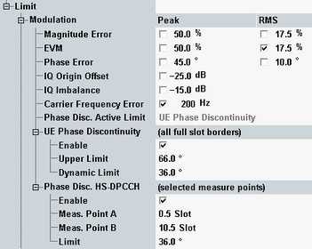

A poor modulation accuracy of the UE transmitter increases the transmission errors in the uplink channel of the WCDMA network. The error vector magnitude (EVM) is the critical quantity to assess the modulation accuracy of a WCDMA UE.
According to 3GPP, the EVM measured at UE output powers ≥ −20 dBm and under normal operating conditions must not exceed 17.5 %. The frequency error must not exceed ±0.1 ppm. Both values are set by default in the configuration dialog.
- For signals without HSPA channels, the phase discontinuity measured between any two adjacent slots has to be less than or equal to 36°. If phase discontinuity is greater than 36°, then the next four measurements have to be less than or equal to 36°. All measurements must be below 66°.
- For signals with HSPA channels, the phase discontinuity must not exceed 36°. This limit must be checked at two specific measurement points of the transmitted UE on/off pattern. The pattern that must be transmitted by the UE is the same as for the HS-DPCCH power step measurement, test case TPC 0 dB (see "Power Control Limits").
For a measurement, conform to 3GPP use the default measurement positions (0.5 slots and 10.5 slots). Trigger the measurement using an external HS-DPCCH trigger one half-slot before the pattern starts with the DTX > ACK/NACK boundary.
According to 3GPP, the same measurement points can be used for the EVM limit check. However the R&S CMW checks the limit for all EVM results.
The configuration dialog provides separate phase discontinuity limit sets for signals with HSPA channels ("Phase Disc. HS-DPCCH") and without HSPA channels (UE phase discontinuity). Which limit set is active depends on the selected measurement period. A half-slot measurement is suitable for signals with HSPA channels (option R&S CMW-KM401 required), a full-slot measurement for signals without HSPA channels. See also parameter "Measurement Period".

The table below lists the test requirements of 3GPP TS 34.121.
Characteristics | Refer to 3GPP TS 34.121, section... | Specified limit |
|---|---|---|
EVM (RMS) | 5.13.1 "Error Vector Magnitude (EVM)" 5.13.1A "Error Vector Magnitude (EVM) with HS-DPCCH" | < 17.5 % |
Frequency error | 5.3 "Frequency Error" | < 0.1 ppm |
Phase discontinuity | 5.13.3 "UE Phase Discontinuity" 5.13.1AA "Error Vector Magnitude (EVM) and phase discontinuity with HS-DPCCH" | < 36° or 66°, see above for details |